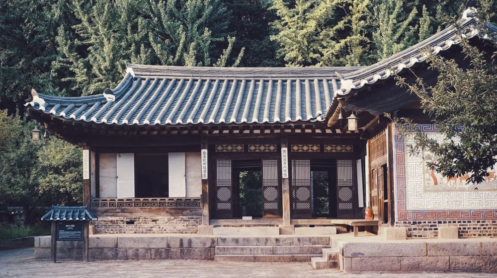

고택 체험 완벽 체크리스트: 실패 없는 5단계 준비로 인생 추억 만들기
사진: Henry Acevedo / Pexels (무료 이미지, 출처 표기)
고택 체험, 왜 지금 선택해야 할까요?

일상에서 벗어나 고즈넉한 한옥에서 하룻밤을 보내는 고택 체험은 단순히 잠만 자는 숙박을 넘어섭니다. 천천히 흘러가는 시간 속에서 전통의 가치와 아름다움을 오롯이 느끼며, 현대 생활에서 쉽게 얻기 어려운 평온함과 영감을 경험할 수 있습니다.
특히 복잡한 도시 생활에 지쳐 몸과 마음의 휴식이 필요한 분들이나, 아이들에게 살아있는 역사 교육의 기회를 제공하고 싶은 가족 단위 여행객에게 고택 체험은 특별한 대안이 될 수 있습니다. 2026년 9월 현재, 전국 각지에는 유서 깊은 고택들이 다채로운 체험 프로그램을 운영하며 방문객을 기다리고 있습니다.
나에게 맞는 고택 찾기: 유형별 특징 비교
고택 체험을 계획할 때 가장 먼저 고려할 것은 어떤 유형의 고택에서 어떤 경험을 하고 싶은지 정하는 것입니다. 고택은 크게 문화유산 그 자체인 곳과 숙박을 위주로 리모델링된 곳으로 나눌 수 있습니다. 각 유형의 특징을 이해하면 더욱 만족스러운 선택을 할 수 있습니다.
한국관광공사에 따르면, 최근에는 현대적인 편의성을 더한 한옥 스테이의 인기가 높지만, 진정한 전통의 멋을 느끼고 싶다면 문화유산으로 지정된 고택을 선택하는 것도 좋은 방법입니다. 각 고택의 웹사이트나 예약 플랫폼에서 상세 정보를 확인하는 것이 중요합니다.
성공적인 고택 체험을 위한 5단계 예약 가이드
고택 체험은 일반 호텔 예약과는 다소 다릅니다. 다음 5단계 가이드를 따라 차근차근 준비하면 성공적인 체험을 할 수 있습니다.
- 1단계: 체험 목표 설정 및 지역 선정
무엇을 얻고 싶은지 명확히 합니다. 휴식, 문화 체험, 특정 지역 방문 등 목적에 따라 고택의 성격과 위치를 결정할 수 있습니다. 예를 들어, 안동 하회마을이나 전주 한옥마을 등 특정 지역의 고택은 지역 문화와 연계된 체험이 가능합니다. - 2단계: 고택 유형 파악 및 숙소 선택
위에서 설명한 고택 유형을 참고하여 원하는 분위기와 편의시설 수준을 고려해 몇 군데의 고택 후보를 정합니다. 예약 플랫폼 후기, 사진, 운영 프로그램 등을 꼼꼼히 확인하세요. - 3단계: 예약 및 비용 확인
숙박 플랫폼(예: 에어비앤비, 야놀자 등) 또는 고택 공식 홈페이지를 통해 예약합니다. 성수기나 주말에는 예약이 빠르게 마감될 수 있으니 미리 예약하는 것이 좋습니다. 비용에는 숙박비 외에 추가 체험비(다도, 전통놀이 등)가 포함될 수 있으니 총 비용을 확인하세요. - 4단계: 준비물 챙기기
고택은 일반 숙소와 다르게 개별 욕실이나 어메니티가 부족할 수 있습니다. 개인 세면도구, 편안한 복장, 간단한 간식 등을 미리 준비하는 것이 좋습니다. 아래 준비물 체크리스트를 참고하세요. - 5단계: 체험 중 에티켓 및 유의사항 숙지
고택은 대부분 문화재 또는 개인 주택인 경우가 많습니다. 조용하고 단정하게 지내며, 시설을 아껴 쓰고, 운영자의 지시에 따르는 것이 중요합니다. 특히 소음이나 흡연에 주의하고, 공동 공간 사용 시 타인에게 피해를 주지 않도록 배려해야 합니다.
놓치면 아쉬운 고택 체험 준비물 체크리스트
편안하고 즐거운 고택 체험을 위해 필요한 준비물들을 꼼꼼히 확인해 보세요. 일반 숙박과는 다른 부분이 있으니 참고하시면 좋습니다.
- 개인 세면도구 및 화장품: 샴푸, 린스, 바디워시, 칫솔, 치약 등
- 편안한 잠옷 및 여벌옷: 한옥은 방이 따뜻해도 외풍이 있을 수 있으니 가벼운 겉옷도 유용합니다.
- 개인용 수건: 제공되지 않거나 부족할 수 있습니다.
- 슬리퍼 또는 편한 신발: 마당이나 주변 산책 시 유용합니다.
- 충전기 및 보조배터리: 고택 내 콘센트 위치가 불편할 수 있습니다.
- 책, 필기도구, 카메라: 고즈넉한 분위기에서 독서나 기록, 사진 촬영은 좋은 추억이 됩니다.
- 간단한 간식 및 음료: 주변에 편의시설이 없을 수 있습니다.
- 상비약: 혹시 모를 상황에 대비하여 준비합니다.
- 모기기피제/벌레퇴치제: 자연 친화적인 환경이므로 필요할 수 있습니다.
고택 체험 시 이것만은 꼭! 주의할 점
고택 체험의 매력을 온전히 누리려면 몇 가지 유의사항을 미리 알아두는 것이 좋습니다.
- 시설 훼손 주의: 고택은 문화재인 경우가 많습니다. 문, 벽, 가구 등 시설을 소중히 다루고 훼손하지 않도록 각별히 주의해야 합니다. 특히 화기 사용에 유의해야 하며, 금연은 필수입니다.
- 방음 문제: 오래된 한옥은 방음이 잘되지 않을 수 있습니다. 밤늦은 시간까지 큰 소리로 대화하거나 TV 시청을 자제하여 다른 투숙객에게 피해를 주지 않도록 배려해야 합니다.
- 냉난방 방식 이해: 한옥은 온돌 난방이 기본입니다. 익숙하지 않은 분들은 미리 난방 방식이나 사용법을 숙지하고, 에어컨 등 냉방 기기는 제한적일 수 있음을 인지하는 것이 좋습니다.
- 음식물 반입 및 취사 규정 확인: 모든 고택에서 취사가 허용되는 것은 아닙니다. 예약 시 음식물 반입 및 취사 가능 여부를 반드시 확인해야 합니다. 대부분의 고택에서는 간단한 다과 외의 취사는 제한합니다.
- 늦은 체크인/체크아웃 불가: 대부분의 고택은 개인 운영이므로 정해진 체크인/체크아웃 시간을 철저히 지켜야 합니다. 특별한 사정이 있다면 미리 연락하여 조율해야 합니다.
고택 체험은 일상에 신선한 활력을 불어넣는 특별한 경험이 될 수 있습니다. 위에 제시된 체크리스트와 주의사항들을 잘 숙지하여, 몸과 마음에 오래도록 남을 아름다운 추억을 만드시길 바랍니다. 정확한 사항은 각 고택의 공식 홈페이지나 해당 기관에서 다시 확인하시길 권장합니다.
🔗 이 글도 함께 보면 좋아요: 서울 도심 청계천 역사와 다채로운 즐길거리 완벽 가이드
관련 추천 상품
이 포스팅은 쿠팡 파트너스 활동의 일환으로, 이에 따른 일정액의 수수료를 제공받습니다.